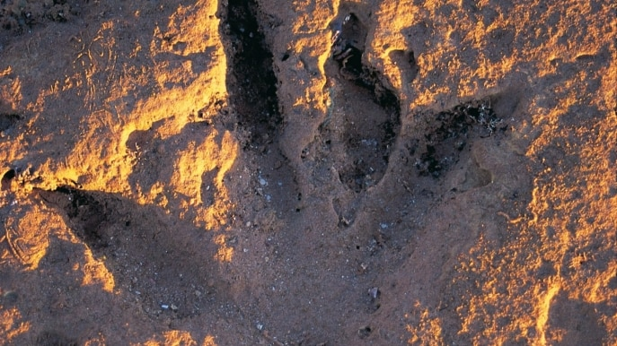
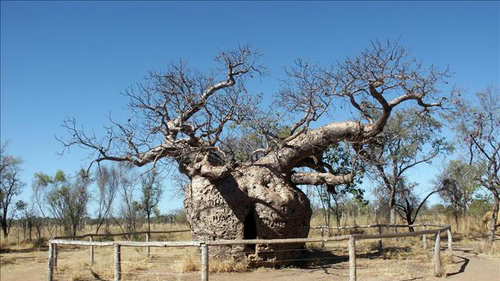

Pearl
Broome 以前曾是世界上重要的珍珠生產中心，此鎮很多地方都可以買到珍珠。遊客可以在當地養殖場參觀珍珠養殖，或者從當地的珍珠博物館了解早期來這裡的日本、馬來西亞和菲律賓採珠人的故事。鎮中的 Japanese Cemetery (日本人墓地) 就是紀念當時在採珠時遇難的近千名日本採珠人。

Gantheaume Point
1.3 億年前的早白堊紀，恐龍的足跡和植物化石沉積在該地區的淺水中，形成了 Broome Sandstone (布魯姆砂岩)。Gantheaume Point (甘芬角) 距離 Broome (布魯姆) 約 6 公里。旅遊時可先參考潮汐時間表，在海水退潮時，可看到距離大海約 30 米（98 英尺）的恐龍腳印。

Boab Tree
學名 Adansonia gregorii (澳洲猢猻樹)，當地人稱 boab tree，是猴麵包樹屬的一種落葉喬木，分布於西澳金伯利地區到北領地之間。樹高約 5 至 15 米，外型與非洲猴麵包樹相似，樹幹直徑可超過 5 米。最有名的一棵「Boab Prison Tree (監獄樹)」在 Derby (德比) 郊區 7 公里，樹圍有 14.7 米。